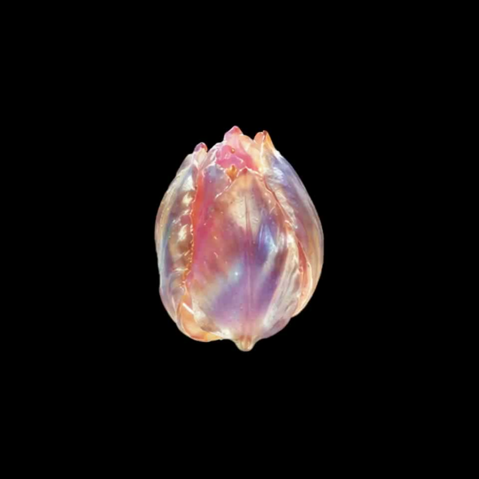
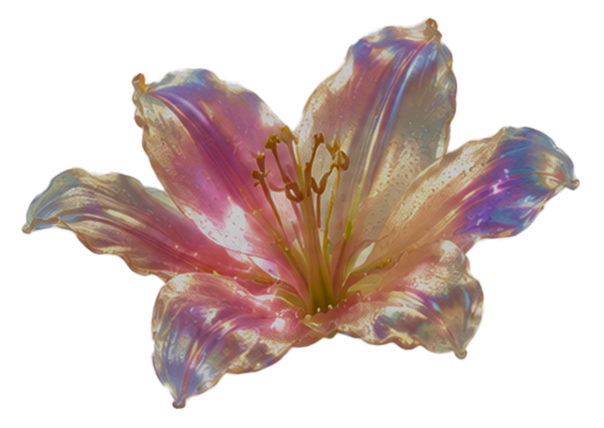
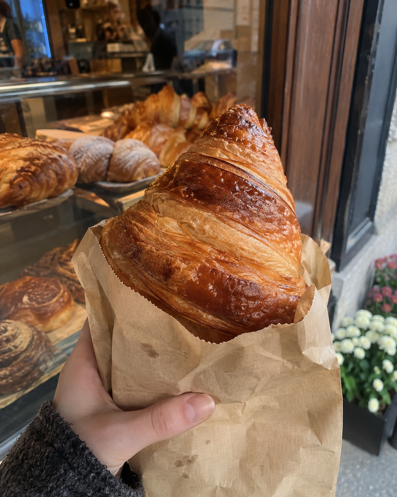
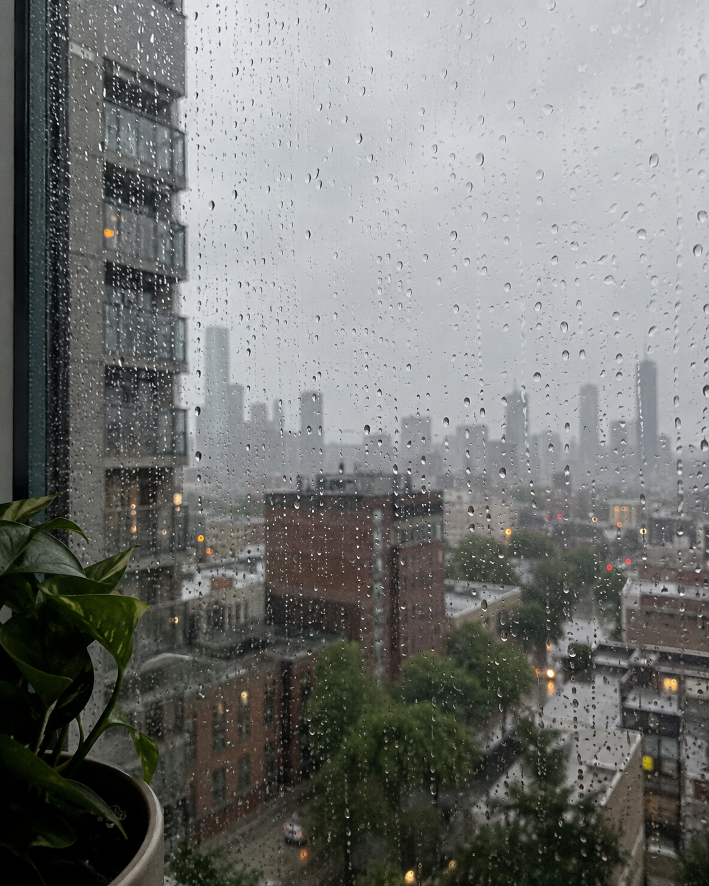

02 / BLOOM CALENDAR
Bloom Calendar
EVERY DAY BLOOMS DIFFERENTLY.
Together, they reveal the story of your month.
매일의 감정을 꽃의 6단계 개화 과정으로 기록하고, 이를 달력 위에 시각화하여 한 달 동안 반복된 감정 패턴과 분포를 직관적으로 확인할 수 있습니다.
MONTHLY CALENDAR

TRACE ME.
Collect your moments.
Understand your emotions.
MOVE YOUR CURSOR MOVE LEFT & RIGHT TO BLOOM
ABOUT / WHY TRACE ME
우리는 매일 수많은 순간을 사진으로 남깁니다.
하지만 그 기록이 나에 대해 무엇을 말하는지는
쉽게 알 수 없습니다.
What if a memory could become emotional data?
TRACE ME
Trace Me는 사진 속 감정 신호를 분석하고,
순간들을 감정의 흐름과 패턴으로 변환해
사용자가 자신을 새롭게 이해하도록 돕는 기록 시스템입니다.
꽃의 여섯 단계로 감정의 흐름을 표현합니다.
꽃을 눌러 각 단계가 담은 감정을 살펴보세요.
CLICK A FLOWER ↗꽃을 눌러 감정을 살펴보세요
TRACE ME PROCESS
사진 속 순간을 수집하고,
감정을 분석해 패턴을 발견하고,
변화하는 나를 이해합니다.
사진에서 감정의 단서를 수집하고 상황을 기록합니다.
수집된 감정을 Trace Me만의 꽃 언어로 변환합니다.
일, 주, 월 단위로 감정의 흐름과 리듬을 관찰합니다.
사진 속 요소들의 관계를 분석해 반복되는 패턴을 발견합니다.
반복되는 패턴을 통해 나의 성향과 감정을 이해합니다.
시간에 따른 감정과 패턴의 변화를 확인합니다.
표정을 바꾸며, 나만의 꽃 카드를 만들어보세요.
LIVE MIRROR
CAMERA OFF
EXPRESSION CHANGE
00%TRACE ME / MY BLOOM

A moment in bloom.
표정을 바꾸면 꽃도 함께 변해요.
FEATURES / THE APP
01 / DAILY EMOTION
Turn each moment into an emotional record.
사진 속 감정 신호를 분석하여 하루의 감정을 꽃의 개화 단계로 변환합니다. 사용자는 자신의 감정 상태를 직관적으로 확인할 수 있으며, 이러한 기록은 이후 감정 캘린더와 인사이트 분석의 기반 데이터로 활용됩니다.
실제 앱 UI 이미지 준비 중
CLICK A CARD TO SEE THE NEXT Or swipe left and right
02 / BLOOM CALENDAR
EVERY DAY BLOOMS DIFFERENTLY.
Together, they reveal the story of your month.
매일의 감정을 꽃의 6단계 개화 과정으로 기록하고, 이를 달력 위에 시각화하여 한 달 동안 반복된 감정 패턴과 분포를 직관적으로 확인할 수 있습니다.
MONTHLY CALENDAR
03 / MONTHLY OVERVIEW
OCTOBER 202610월의 기록을 돌아보다
기쁨으로 채운 10월.
하루하루 남긴 꽃을 모아,
한 달의 감정과 변화를 살펴보세요.

중순까지 활짝 피어났던 감정은
월말로 갈수록 잠시 쉬어가는 흐름을 보였어요.
행복과 설렘이 한 달의 70%를 채웠어요.
10월의 오버뷰
11월을 위한 제안
잠들기 전 30분, 쉬어갈 시간
오늘 밤 이렇게 해보세요잠들기 30분 전 휴대폰을 내려놓고 조명을 낮춰 보세요. 편안했던 순간 하나를 떠올리며 하루를 마무리해요.
하루 5분, 내 마음에 집중하기
잠깐 쉬어가는 5분편안히 앉아 천천히 호흡해 보세요. 지금 느끼는 감정을 한 단어로 떠올려요. 잘하려 애쓰지 않아도 괜찮아요.
하루 한 번, 사진과 마음 남기기
오늘 기억하고 싶은 순간사진 한 장을 고르고, 왜 남기고 싶은 순간인지 한 줄 적어 보세요. 특별한 일이 없는 날도 좋은 기록이 돼요.
달라진 감정, 달라진 관심사.
기록 속에서 나의 변화를 발견해요.
YOUR EVERYDAY, CONNECTED.
함께한 사람과 좋아하는 장소, 자주 즐긴 활동까지.
사진에 쌓인 나의 관계와 취향을 한눈에 살펴보세요.
YOUR EVERYDAY PATTERNS
사람 · 장소 · 일상
친구들과 함께한 식사와 모임.


당신의 순간을 기록하고,
그 안의 나를 발견하세요.
CLICK TO LEAVE YOUR TRACE
Your expression, translated live.
표정을 바꾸며 꽃의 변화를 만나보세요.
LIVE PORTRAIT
CAMERA OFF
EXPRESSION CHANGE
00%